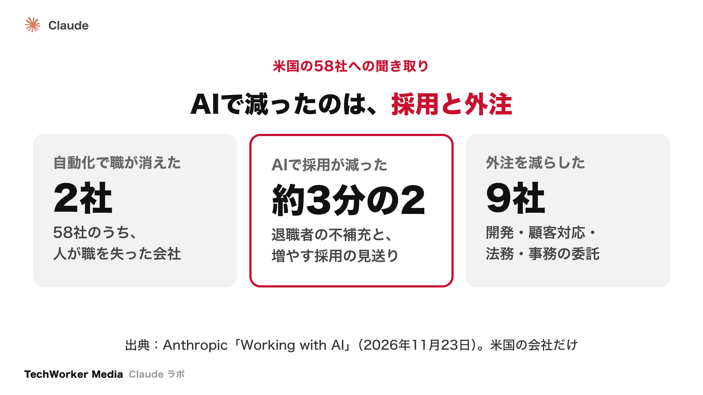
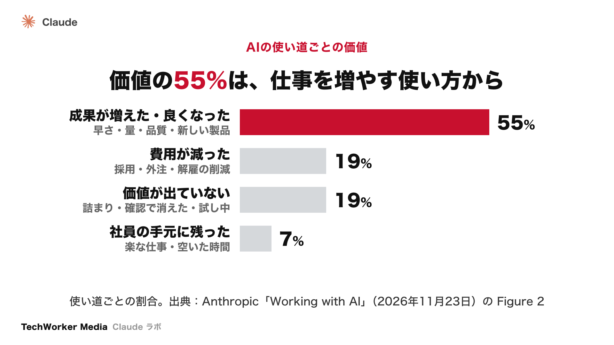
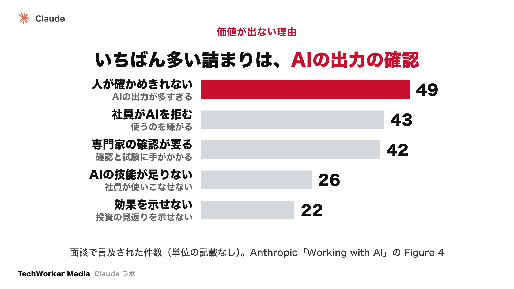
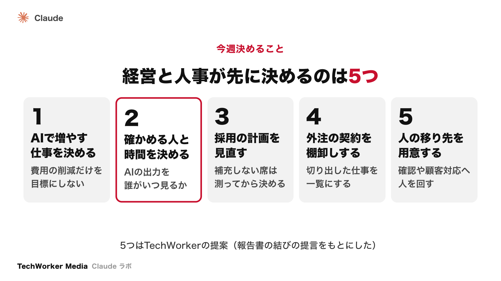

Anthropicは2026年11月23日、報告「Working with AI」を公開しました。米国の法人顧客58社で、経営者・管理職・現場の担当者に66回話を聞いた調査です。
- 雇用：AIの自動化で人が職を失った会社は、58社のうち2社でした。約3分の2の会社が、AIを理由に採用が減ったと答えています。
- 外注：9社がソフトウェア開発・顧客対応・法務・事務の委託を減らしました。多くは海外へ出していた仕事です。
- 詰まり：価値が出ない理由で最も多く挙がったのは、AIの出力が多すぎて人が確かめきれないことでした。
報告書のPDF（英語・29ページ）を2026年11月25日に読み、数字と条件を確かめました。そのうえで、日本の経営者と人事が今週決めることをまとめます。
Anthropicの58社調査で何が分かりましたか？
AIの影響は採用と外注の減り方に出ていました。AIの自動化で人が職を失った会社は2社で、約3分の2の会社が、AIを理由に採用が減ったと答えています。

報告書は採用を減らした会社について次のように書いています。
原文“People at two-thirds of the companies we spoke to reported reduced hiring due to AI: as one person put it, ‘We may not be firing, but we’re not hiring.’”
日本語訳話を聞いた会社の3分の2で、AIを理由に採用が減ったという話がありました。ある人は「解雇はしていないかもしれないが、採用もしていない」と言いました。
雇用に関わる数字を、報告書の書き方のまま表にしました。
| 報告書に書かれた動き | 会社の数 | 報告書の説明 |
|---|---|---|
| AIの自動化で職がなくなり、人が職を失った | 2社 | 米国内でAIが理由の解雇の例はとても少ない |
| AIを使おうとしない社員を辞めさせた | 5社 | 反対の強い社員を説得できなかった例 |
| AIを理由に採用を増やした | 10社 | 主にAIの導入の担当と、ITの支援の採用 |
| AIを理由に採用が減ったと答えた | 約3分の2 | 3分の1は退職者の不補充。多くは事業を広げるために要った採用の見送り |
| 外注を減らした | 9社 | ソフトウェア開発・顧客対応・法務・事務。多くは海外へ出していた仕事 |
出典：Anthropic「Working with AI」9〜10ページ（2026年11月25日確認）。「約3分の2」の社数は報告書に書かれていません
健康管理の会社の技術責任者は「人を雇う代わりにトークンを買って、かなりの余力を足した」と話しています（10ページ）。トークンを多く使う働き方は、「トークンマキシングとは」で扱っています。
AIに任せる工程と、人が確かめる工程を部署ごとに書き分ける業務図の型は、下の枠から受け取れます。
どんな会社に、どう聞いた調査ですか？
AIを入れている途中の米国の58社に、1回25〜40分のビデオ面談を66回行った調査です。会社は無作為に選ばれておらず、数字は話した人の申告です。
- 公開と著者：2026年11月23日の公開です。著者はNathan Wilmers、Maxim Massenkoff、Peter McCroryの3名です。
- 聞いた人：経営者、管理職、現場の担当者です。1人に1回ずつ聞き、会社も人も匿名にしています。
- 数え方：話に出た使い道や詰まりを、AIによる自動の分類で数えています。
- 会社の幅：AIで生まれた新興企業から創業100年の会社まで並びます。製造、法律事務所、会計、運送、出版などを含みます。
- 偏り：米国国勢調査局の調査でAIを使っている会社と比べると、ソフトウェアと金融が多く、小売と運輸が少ないと、付録が書いています。
原文“They were selected for this study because of their range across industry, size, and AI usage, though they are not a random or systematically representative sample.”
日本語訳業種、規模、AIの使い方に幅があることからこの調査に選んだ会社で、無作為の標本でも、体系的に代表性を持たせた標本でもありません。
報告書は、価値の大きさも面談での話をもとにした評価で、A/Bテストなどで測った値ではないと書いています。日本の会社は含まれていません。数字は「米国のこの58社ではこうだった」と読むのが正確です。
なぜ採用と外注から減ったのですか？
外注していた仕事は切り出しやすい単位で、AIに置き換えやすかったと報告書は説明しています。採用は、AIがなければ事業を広げるために要った分を見送る形が多数でした。
原文“Beyond terminations and reduced hiring, nine companies described cutting contracted software developers, customer service representatives, legal counsel, and a range of back-office functions, many of which they had already offshored.”
日本語訳解雇と採用の減少のほかに、9社が委託していたソフトウェア開発者、顧客対応の担当、法務の助言、さまざまな事務の機能を減らしたと話しました。その多くは、すでに海外へ出していた仕事でした。
報告書に載った例は次のとおりです。会社名は伏せられています。
- 金融の会社：海外にいるデータ担当と開発担当の委託要員を、100人を大きく上回って減らしました（10ページ）。
- フィンテックの会社：顧客対応にAIエージェントを入れ、海外への顧客対応の委託を減らしました。管理者はAIとの会話の記録を読み、AIへの指示と手順書を直す仕事に移りました（10ページ）。
- 書類の審査がある会社：社内の承認の基準で書類を読むAIエージェントを作りました。翌年に採用する予定だった審査の担当者の数を、90%以上減らしました（10ページ）。
- 新興企業の例：報告書は、AIで生まれた新興企業がこの自動化を極端に進めていると書いています。ある最高執行責任者は、運用の予算の90%がAIのトークン、10%が人件費だと話しました（10ページ）。見積もりを出した新興企業6社は、AIがなければ平均で4倍の社員が要ると答えています（11ページ）。
報告書の要約は、海外への外注の削減を、国際的な業務委託の産業で仕事が揺らぐ早い兆しかもしれないと書いています。日本の会社も、開発や事務を外へ出している場合は、どの契約が対象になりやすいかを同じ見方で確かめられます。
AIの価値はどこから生まれましたか？
使い道ごとに見ると、55%は成果を増やす・良くする使い方で、19%は費用を減らす使い方でした。7%は社員の手元に価値が残る使い方で、19%はまだ価値が出ていません。

報告書の図2は、66回の面談に出た使い道を価値の種類ごとに分けています。内訳は次のとおりです。
| 価値の種類 | 割合 | 内訳 |
|---|---|---|
| 成果が増えた・良くなった | 55% | 品質が上がった14%、今の仕事が速くなった11%、社内の道具を作った10%、既存の仕事の量が増えた8%、新しい製品8%、たまった仕事が片付いた4% |
| 費用が減った | 19% | 採用を減らした11%、外注を減らした6%、解雇2% |
| 価値が出ていない | 19% | 試し中・不明8%、ほかの工程で詰まった6%、確認の手間で消えた5% |
| 社員の手元に残った | 7% | 負担の軽い仕事に変わった6%、空き時間1% |
出典：Anthropic「Working with AI」の図2（8ページ）。割合は図から読み取った値です
報告書によると、面談の回答者は、最も価値の大きい使い方は組織の大きな作り変えを伴ったと話しました。
AIで作ったソフトウェアの話も100件出ています。80%は手作業を自動にした物でした。残りの20%は既存のソフトウェアの置き換えで、多くは外の会社から買っていた物です（5ページ）。
AIを入れた会社はどこで詰まりましたか？
最も多く挙がったのは、AIの出力が多すぎて人が確かめきれないこと（49）です。社員がAIを拒むこと（43）と、専門家の確認と試験が要ること（42）が続きます。

数字は面談で詰まりとして言及された件数です。面談の数か、会社の数か、言及の回数かは、報告書の図4（17ページ）に書かれていません。技術者にとっては、コードの確認が大きな詰まりになりました。
原文“For engineers, code review became a critical bottleneck, so many of them have worked on solving it.”
日本語訳技術者にとってはコードの確認が決定的な詰まりになり、多くの技術者がその解決に取り組んできました。
報告書に載ったコードの確認の対処は、3つに分かれます。
- コードの確認そのものを自動にする。
- 技術者の時間のうち、確認に使う割合を増やす。
- 決まった形の確認をやめ、技術者がClaudeと並んでコードを確かめる（1社の例）。
確認の失敗と、確認で見つけた例も1件ずつ載っています。ある会社では、AIエージェントがAPIの宛先に余分な「S」を1字足し、準備してきた機能の公開が壊れました。別の会社では、投資の責任者が、AIが作った損益の見込みが古い前提だったと気づきました。AIの作業を指示書と合格の条件で確かめる業務図は、「AIの作業者に仕事を任せる」で紹介しています。
日本の会社にもそのまま当てはまりますか？
雇用の数字は、そのままは当てはめられません。米国の58社の申告です。使えるのは、詰まりの型と、報告書が勧める組織の作り変え方です。
報告書はAIの入れ方を3つに分けて、それぞれの弱さを書いています。
| 入れ方 | やり方 | 報告書が挙げた弱さ |
|---|---|---|
| 上から入れる | 自動にする業務を選び、会社として仕組みを入れる | 雇用の不安、監視されている不安、仕組みを作るのに要る専門家の反発 |
| 下から広げる | AIの道具を配り、社員が使い方を見つけるのを待つ | 使う人と使わない人の差、1つの作業だけで終わる使い方 |
| 組織を作り変える | 役割を広げ、AIにできない仕事へ人を移し、データを開く | 回答者は、最も価値の大きい使い方は組織の大きな作り変えを伴ったと話した |
出典：Anthropic「Working with AI」の要約と結び（2・24〜25ページ）
原文“Employers that develop systems to redeploy employees in new roles and broaden their scope may be best placed to take advantage of these intelligence gains without displacing employees.”
日本語訳社員を新しい役割へ移し、仕事の範囲を広げる仕組みを作る雇い主は、社員の仕事を奪わずにこの知能の伸びを生かせる位置にいるかもしれません。
報告書は同じ結びで、これはAIによる失業を防ぐ保証にはならないとも書いています。TechWorkerは、日本の会社がこの報告書から持ち帰る物は、詰まりの型と作り変え方だと考えています。雇用の数字は米国の58社の話です。「人が確かめきれない」は米国の58社で最も多く挙がった詰まりで、日本でも起きるかは報告書から分かりません。それでも、AIを広げる前に確認の担当を決めておく価値はあると考えます。
経営と人事が今週決めることは何ですか？
報告書の結びをもとに、TechWorkerが提案する5つです。AIで増やす仕事、AIの出力を確かめる人と時間、採用の計画、外注の契約、人の移り先を決めます。

- AIで増やす仕事を決める：報告書では、価値の種類が分かった使い道の55%が、成果を増やす使い方でした。目標に、増やす件数や速さを書き、費用の削減も加えます。
- 確かめる人と時間を決める：最も多い詰まりは確認でした。AIを入れる業務ごとに、誰がいつ出力を確かめるかを先に決め、その時間を予定に入れます。
- 採用の計画を見直す：TechWorkerは、退職者を補充しない席を決める前に、AIでその仕事が回るかを1〜2か月測ることを勧めます。
- 外注の契約を棚卸しする：報告書では、切り出しやすい委託の仕事から置き換えが進みました。委託している仕事を一覧にし、AIで社内に戻せる物と、外に残す物を分けます。
- 人の移り先を用意する：AIで手が空いた人を、確認、顧客との対応、判断など、AIにまだできない仕事へ移す道筋を、人事の計画に書きます。
業務の流れを1枚の図にして、AIに任せる工程と人が判断する工程を分ける方法は、「AIに任せる業務の決め方」で解説しています。社員に使い方を教える研修の組み方は、「Claude Codeの法人研修」を参考にできます。
Claude で作るエージェントの例として、設計書から運用手順書の下書きを社内のひな形で作るエージェントと経費精算の申請を規程どおりに点検するエージェントの作り方を公開しています。
よくある質問
Anthropicのサイトの研究のページで公開されています。英語のPDF（29ページ）も同じページから無料で読めます。公開日は2026年11月23日です。
58社のうち、AIの自動化で職がなくなり人が職を失ったと話した会社は2社でした。AIを使おうとしない社員を辞めさせた会社は5社ありました。報告書は、AIによる失業を防ぐ保証はないとも書いています。
報告書は社数を書いていません。「話を聞いた会社の3分の2で、AIを理由に採用が減ったという話があった」と書いているだけです。採用が減った分の3分の1は、退職者を補充しない形でした。
ありません。対象は米国の58社だけです。報告書の付録は、米国国勢調査局の調査でAIを使っている会社と比べて、ソフトウェアと金融が多く、小売と運輸が少ないと書いています。日本の会社は詰まりの型と組織の作り変え方を参考にできます。
報告書に載ったコードの確認の対処は3つです。確認を自動にする会社と、技術者が確認に使う時間を増やす会社がありました。3つ目は、決まった形の確認をやめ、技術者がClaudeと並んで確かめる会社（1社）です。ほかの業務の確認の例は報告書にありません。TechWorkerは、AIを入れる業務ごとに確かめる人と時間を先に決めることを勧めます。
次の一歩は何から始めればよいですか？
社内でAIを使っている業務を3つ挙げ、価値の種類と、確かめる人を書き出すことから始めます。
- AIを使っている業務を3つ挙げ、それぞれ「成果が増えた」「費用が減った」「価値が出ていない」のどれかを書きます。
- 業務ごとに、AIの出力を誰がいつ確かめているかを書きます。決まっていない業務は、ここで担当を決めます。
- 来期の採用と外注の計画を、この表と並べて見直します。
TechWorkerの研修では、受講者の実際の業務1本をAIに任せる形まで当日に作ります。30日後に、使った人の割合と1件にかかる時間を測って報告します。検討段階のご相談だけでも歓迎です。
出典と確認範囲
確認日：2026年11月25日。数字はすべて報告書のPDFから取りました。報告書の数字は米国の58社への面談での申告で、TechWorkerでは確かめていません。図2と図4の数字は、報告書の図から読み取った値です。調査をした時期は報告書に書かれていません。経営と人事が決める5つと、日本の会社への当てはめ方はTechWorkerの提案です。